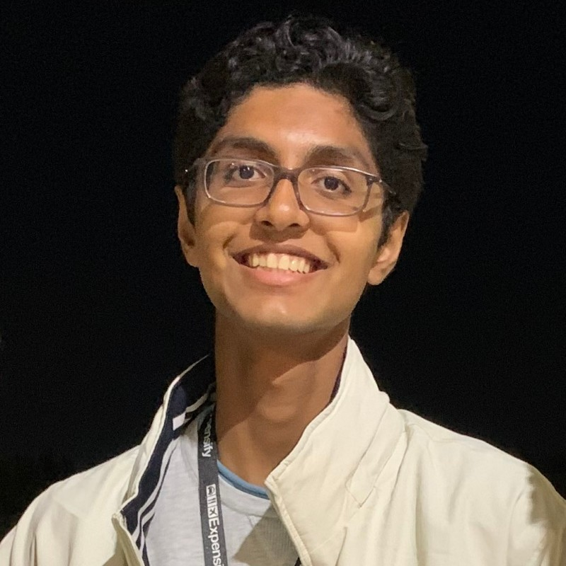
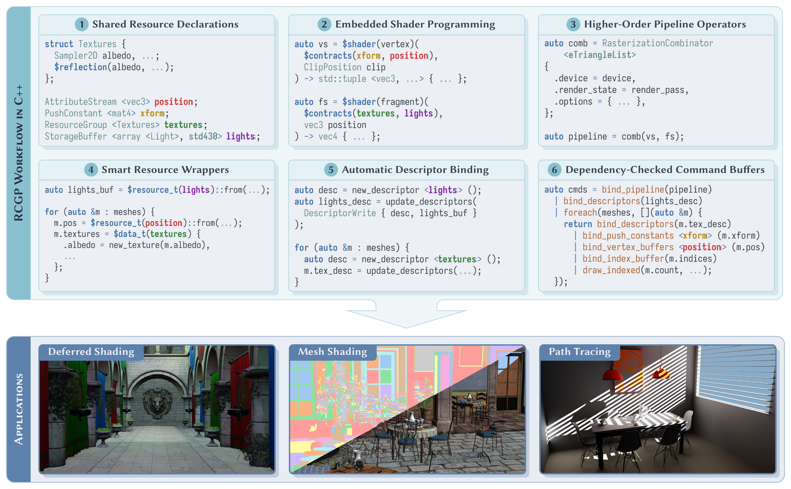
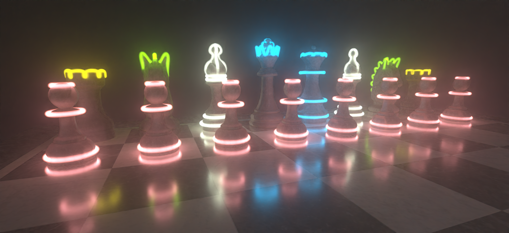
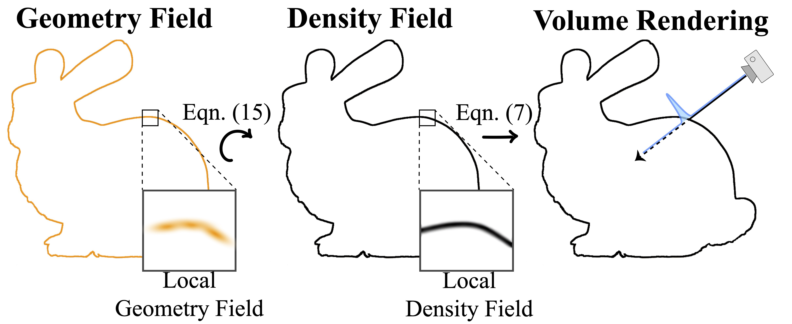
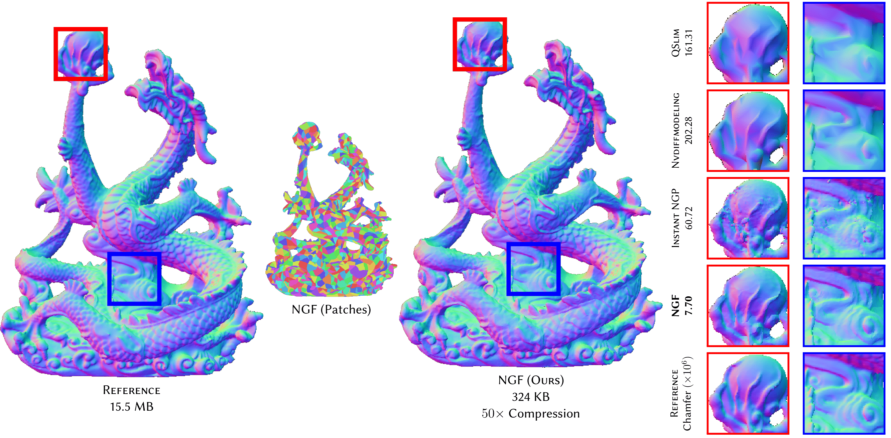
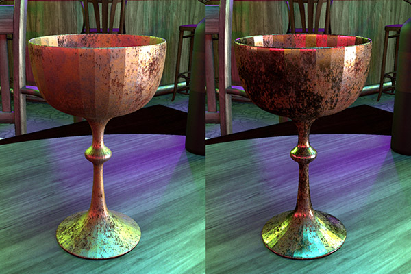

Venkataram Sivaram
I am a first-year PhD student at the Computer Science and Artificial Intelligence Lab (CSAIL) at Massachusetts Institute of Technology (MIT), advised by Professors Fredo Durand and Jonathan-Ragan Kelley.
I graduated from UC San Diego (UCSD) in Spring of 2025 with a Bachelor of Science in Computer Science, earning the Honors with highest distinction and a minor in Mathematics. During this time, I was actively involved in Computer Graphics research at the Center for Visual Computing, where I was fortunate to be mentored by Professors Ravi Ramamoorthi and Tzu-Mao Li.
My research interests span various topics in computer graphics, including neural graphics, differentiable rendering, and appearance modeling. I'm passionate about developing efficient algorithms for 3D graphics and am eagerly exploring the intersection of machine learning and computer graphics.
Publications
-

RCGP: Resource Contracts for Graphics Programming
ACM SIGGRAPH 2026 · Journal Track (TOG)A system for enforcing resource contracts between components of a graphics program, turning descriptor mismatches, layout drift, and missing synchronization into compile-time diagnostics.
-

Modeling and Rendering Glow Discharge
ACM SIGGRAPH 2025 · Conference TrackA model of glow discharge — the light-emitting electrostatic process underlying Neon lights and gas discharge lamps — as a point-wise emission solver compatible with standard volume rendering.
-

Geometry Field Splatting with Gaussian Surfels
CVPR 2025A differentiable renderer for surface reconstruction in which geometry is represented as a field of Gaussian surfels, avoiding the Taylor approximations used in prior formulations.
-

Neural Geometry Fields for Meshes
ACM SIGGRAPH 2024 · Conference TrackA neural representation for triangle meshes that encodes geometry as a coarse set of quadrangular patches together with coordinate networks that displace each patch to recover fine detail.
-

Parameter-space ReSTIR for Differentiable and Inverse Rendering
ACM SIGGRAPH 2023 · Conference TrackAdapts ReSTIR-style temporal reuse to differentiable and inverse rendering by reformulating gradient estimation in parameter space.
Education
-
2025 — presentPhD, Computer ScienceMassachusetts Institute of Technology, CSAIL
-
2022 — 2025BS, Computer ScienceUC San Diego · honors with highest distinction · minor in mathematics
Awards
-
2025EECS Great Educators FellowshipMassachusetts Institute of Technology
-
2025Computing Research Association (CRA)
-
2024UC San Diego, CSE Department
-
2024Computing Research Association (CRA)
Work
Academic Service
-
2024 — 2026Reviewer · ACM SIGGRAPH
-
2024 — 2025Reviewer · ACM Transactions on Graphics
-
Winter 2025Teaching Assistant · CSE 167, Computer GraphicsUC San Diego
-
Fall 2024Teaching Assistant · CSE 167, Computer GraphicsUC San Diego